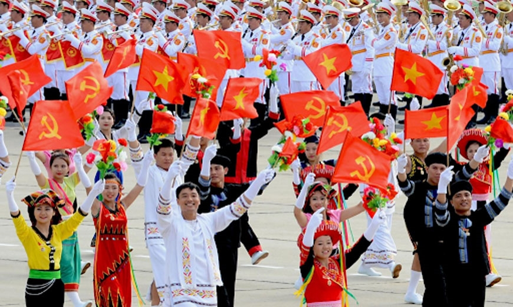

Quan điểm của C.Mác về giải phóng con người và sự vận dụng ở Việt Nam hiện nay
(LLCT) - Triết học Mác ra đời là tuyên bố khoa học, cách mạng, nhân bản về vấn đề giải phóng con người. Giải phóng con người và con người được giải phóng không chỉ là tôn chỉ, mục tiêu của cuộc cách mạng cộng sản chủ nghĩa. Đây là cuộc cách mạng toàn diện, hoàn bị nhất trong lịch sử nhân loại nhằm đưa con người đến với “vương quốc của tự do”. Quan điểm của C.Mác về giải phóng con người là một thành tố quan trọng trong lý luận và thực tiễn giải phóng con người của Đảng Cộng sản Việt Nam hiện nay.
1. Mở đầu
Giải phóng con người là một vấn đề hấp dẫn trong các cuộc tranh luận triết học trong lịch sử. Thời Hy Lạp cổ đại, tuyên bố “Hãy tự biết mình!” của Socrate (470-399 TCN) đã làm cho các nhà triết học chuyển từ việc nghiên cứu về thế giới tự nhiên sang nghiên cứu về xã hội. Từ đó, vấn đề con người trở thành chủ đề trung tâm của những tranh luận triết học, phản ánh hành trình, khát vọng của triết học trong truy tìm phẩm giá của con người. Trong các quan điểm của phương Tây, quan điểm của C.Mác là điểm nhấn khi luận bàn về giải phóng con người.
Bước nhảy về chất trong quan điểm của C.Mác là ông đã đứng trên lập trường duy vật biện chứng, xuất phát từ con người, lấy con người là chủ thể trung tâm và làm mục đích của sự giải phóng. Lý luận giải phóng con người của ông được trình bày một cách khoa học, hệ thống, là tôn chỉ, hạt nhân trong lý luận về giải phóng con người của Đảng Cộng sản Việt Nam hiện nay.
2. Thực chất vấn đề giải phóng con người trong quan điểm của C.Mác
C.Mác xuất phát từ con người hiện thực, đang sống và hoạt động trong phương thức sản xuất tư bản chủ nghĩa đầu thế kỷ XIX để nghiên cứu lý luận giải phóng con người. C.Mác thấy rằng lao động là hành vi cơ bản nhất, là nguyên nhân, nhu cầu, mục đích của đời sống con người. Lao động sáng tạo con người và con người sáng tạo thông qua lao động. Lao động khẳng định vai trò của con người với tư cách là chủ thể sáng tạo. Nhưng con người trong phương thức sản xuất tư bản chủ nghĩa là con người bị tha hóa, sự bần cùng hóa về đời sống vật chất và sự què quặt về đời sống tinh thần. Nguyên nhân của con người bị tha hóa là lao động bị tha hóa. “Lao động bị tha hóa đảo ngược quan hệ đó khiến cho con người chính vì là một sinh vật có ý thức, chỉ biến hoạt động sinh sống của mình, bản chất của mình thành phương tiện để duy trì sự tồn tại của mình mà thôi”(1). Con người bị tha hóa là sự đánh mất mình trong thế giới do con người sáng tạo ra. Sản phẩm, hành vi, thân thể của con người trở thành lực lượng đối lập, thống trị con người.
Khi khảo cứu quan hệ giữa tư bản và lao động làm thuê, C.Mác cho rằng cả người công nhân và người tư sản đều bị tha hóa... Đối với người công nhân, tha hóa lao động biểu hiện ở ba phương diện: (1) Sự thống trị của sản phẩm do người công nhân tạo ra với bản thân anh ta, “sự thống trị của vật chất chết đối với con người”(3); (2) Hành vi lao động bị tha hóa... (3) Hệ quả tất yếu là sự tha hóa bản chất con người, “đời sống hóa ra chỉ là phương tiện sinh sống”(5).
C.Mác xác định vấn đề giải phóng con người thực chất là dần khắc phục, xóa bỏ tình trạng con người bị tha hóa. Phát huy hết nhu cầu và khả năng của con người trong đời sống hiện thực...
3. Quá trình giải phóng con người gắn bó hữu cơ với sự ra đời, phát triển của chủ nghĩa cộng sản
Với quan điểm duy vật biện chứng, C.Mác đã “đem lại cách viết mới về lịch sử”. Lịch sử bắt đầu từ nền sản xuất vật chất, đó là sự sáng tạo con người thông qua lao động. Lịch sử toàn thế giới bị chi phối bởi các quy luật khách quan qua sự phát triển lịch sử - tự nhiên của những hình thái kinh tế - xã hội. Biện chứng của xã hội tất yếu đưa đến sự ra đời của chủ nghĩa cộng sản như “hình thức tất yếu và là nguyên tắc kiên quyết của tương lai sắp tới”(10).
Muốn giải phóng hoàn toàn con người khỏi tình trạng bị tha hóa cần xóa bỏ nguyên nhân, phương tiện dẫn đến con người bị tha hóa là chế độ tư hữu... Xóa bỏ chế độ tư hữu là quá trình hết sức lâu dài, khó khăn, “những cơn đau đẻ dài” của hiện thực.
Quán triệt sâu sắc phương pháp luận mácxít trong vấn đề này, Đảng Cộng sản Việt Nam khẳng định: “Theo quy luật tiến hóa của lịch sử, loài người nhất định sẽ tiến tới chủ nghĩa xã hội”(13). Hơn 94 năm qua, Đảng luôn kiên định con đường độc lập dân tộc và CNXH...
4. Con người vừa là chủ thể, vừa là sản phẩm của quá trình cải tạo xã hội, giải phóng con người
Nội dung lý luận này xuất phát từ quan điểm C.Mác về con người với tư cách vừa là chủ thể, vừa là sản phẩm lịch sử. Chủ thể và sản phẩm là khác nhau nhưng thống nhất nhau trong con người.
Thứ nhất, con người là chủ thể của lịch sử. Thông qua lao động, con người chứng minh mình là chủ thể sáng tạo ra “giới tự nhiên thứ hai” của con người. “toàn bộ cái gọi là lịch sử toàn thế giới chẳng qua chỉ là sự sáng tạo con người kinh qua lao động, sự sinh thành của tự nhiên cho con người...”(17).
Kế thừa, vận dụng sáng tạo di sản triết học của C.Mác, trong sự nghiệp đổi mới hiện nay, Đảng Cộng sản Việt Nam luôn quán triệt sâu sắc quan điểm con người là chủ thể, trung tâm, động lực của sự nghiệp xây dựng CNXH, giải phóng con người. Cương lĩnh xây dựng đất nước trong thời kỳ quá độ lên chủ nghĩa xã hội (bổ sung, phát triển năm 2011) chỉ rõ: “Con người là trung tâm của chiến lược phát triển, đồng thời là chủ thể phát triển”(21).
Thứ hai, con người là sản phẩm của lịch sử. Con người là sản phẩm của những yếu tố đặc trưng về điều kiện, hoàn cảnh của thời đại mà họ đang sống. Đánh giá về công lao của Phoiơbắc (1804-1872) khi phát hiện con người là sản phẩm của những hoàn cảnh, thời đại khác nhau, C.Mác viết: “Cái học thuyết duy vật chủ nghĩa cho rằng con người là sản phẩm của những hoàn cảnh và của giáo dục...”(24).
Quán triệt sâu sắc phương pháp luận của triết học mácxít, Đại hội XIII tiếp tục quan điểm xây dựng môi trường xã hội tiến bộ, tích cực để con người phát huy hết nhu cầu, khả năng trong nhận thức và thực tiễn.
5. Giải phóng con người là không ngừng nâng cao đời sống vật chất và tinh thần của con người
C.Mác chỉ rõ, con người phải có điều kiện để sống rồi mới có thể “làm ra lịch sử”... Sinh hoạt vật chất và sinh hoạt tinh thần là hai mặt cấu thành nên đời sống phong phú của con người.
Tương ứng với quá trình phát triển của chủ nghĩa cộng sản, con người đang từng bước được giải phóng và hoàn thiện bản chất của mình. Chủ nghĩa cộng sản là hình thái kinh tế - xã hội mà đời sống vật chất và tinh thần của con người không ngừng được nâng cao, đó vừa là mục đích vừa là yêu cầu của chế độ xã hội mới.
Trong sự nghiệp đổi mới đất nước, Đảng Cộng sản Việt Nam luôn quan tâm chăm lo đời sống vật chất và tinh thần của nhân dân, với tư cách vừa là mục tiêu, yêu cầu của thời kỳ đổi mới, vừa là phương thức giải phóng con người.
_________________
(1), (2), (3), (4), (5), (6), (7), (8), (9), (10), (11), (12), (17), (18), (20), (30), (32), (33) C.Mác và Ph.Ăngghen: Toàn tập, t.42, Nxb Chính trị quốc gia Sự thật, Hà Nội, 2000, tr.136, 145, 121, 132-133, 136, 142, 142, 169, 143, 183, 241, 167, 182, 143, 167, 138, 215, 170.
(13), (15), (21) ĐCSVN: Văn kiện Đại hội đại biểu toàn quốc lần thứ XI, Nxb Chính trị quốc gia, Hà Nội, 2011, tr.69, 70, 76.
(14), (34) ĐCSVN: Văn kiện Đảng toàn tập, t.51, Nxb Chính trị quốc gia, Hà Nội, 2007, tr.136, 89.
(16), (22), (23), (27), (28), (36), (38) ĐCSVN: Văn kiện Đại hội đại biểu toàn quốc lần thứ XIII, t.I, Nxb Chính trị quốc gia Sự thật, Hà Nội, 2021, tr.112, 215-216, 46, 71, 262-263, 65-66.
(19) C.Mác và Ph.Ăngghen, Toàn tập, t.4, Nxb Chính trị quốc gia Sự thật, Hà Nội, 1995, tr.646.
(24), (29) C.Mác và Ph.Ăngghen, Toàn tập, sđd, t.3, tr.10, 40.
(25), (26) C.Mác và Ph.Ăngghen, Toàn tập, t.8, Nxb Chính trị quốc gia Sự thật, Hà Nội, 1995, tr.145, 148.
(32) Trần Đức Thảo: Vấn đề con người và “chủ nghĩa lý luận không có con người”, Nxb Tổng hợp Thành phố Hồ Chí Minh, 2000, tr.75.
(35) ĐCSVN: Văn kiện Đảng toàn tập, t.55, Nxb Chính trị quốc gia - Sự thật, Hà Nội, 2015, tr.367.
(37) ĐCSVN: Văn kiện Đại hội đại biểu toàn quốc lần thứ XIII, t.II, Nxb Chính trị quốc gia Sự thật, Hà Nội, 2021, tr.134.